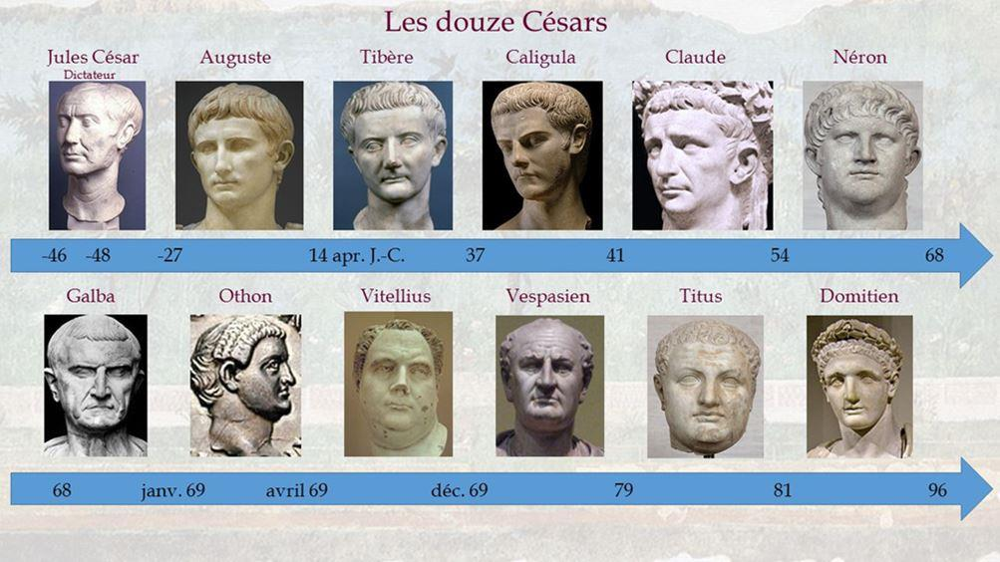
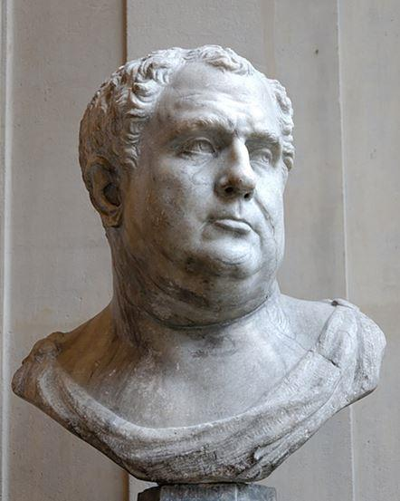
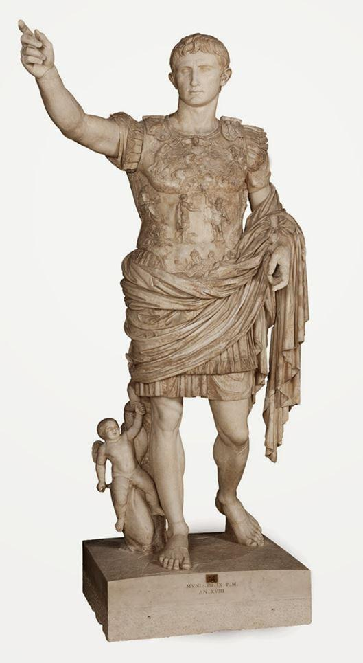

Virginie Girod est docteur en histoire et spécialiste de l’Antiquité romaine. Elle a publié les biographies d’Agrippine et de Théodora, qui ont rencontré un beau succès. Avec son dernier ouvrage, elle revient sur « la véritable histoire des douze Césars ».
Suétone fut un haut fonctionnaire romain, membre de l'ordre équestre qui travaillait comme secrétaire et bibliothécaire. Cette charge lui permit de consulter librement les archives impériales et de rédiger les biographies des premiers Césars, de Jules à Domitien. Nous pouvons écrire que la Vie des 12 Césars constitue l’apogée de sa carrière. Le clin d’œil et bien plus de Girod à Suétone paraît donc évident dans le choix de son titre. Elle confesse volontiers, ce qui suit, à la fin de l’ouvrage : « En hommage à Suétone, mon compagnon d’études, je réécris les Douze Césars, mes douze Césars, car cela fait plus de douze ans que je vis un peu avec eux. Tout fait sens. »
En 2019, n’est-il pas étonnant d’écrire une énième histoire des premiers empereurs romains ? Dès les premières lignes, l’auteur répond à cette question avec vivacité et pertinence : « Pourquoi revenir aux douze Césars ? Parce qu’ils ne cessent de nous fasciner. Qui n’a jamais rêvé d’avoir l’audace de César et de franchir, comme lui, le Rubicon ? Qui n’a jamais imaginé d’être doué d’un esprit aussi rusé que celui d’Auguste et de devenir un meneur d’hommes adulé ? Qui en son for intérieur, n’a jamais envié les nuits orgiaques de Caligula ou Néron ? »
Nous sommes les héritiers de cette histoire romaine. Par conséquent, il semble logique de nous intéresser à ceux qui ont marqué leur époque et les siècles… jusqu’à nous ! Girod constate que « bons ou mauvais, les Césars ont tous été animés par une volonté de puissance au sens nietzschéen, une pulsion de vie si extraordinaire qu’elle aboutit irrémédiablement à l’hybris… » De fait, l’auteur avoue que ces hommes « rendus immortels par l’histoire sont toujours présents dans les manuels de nos écoliers, jusque dans les œuvres de fiction les plus variées. De l’opéra aux séries télévisées, en passant par les grands péplums hollywoodiens et la bande dessinée, ces mégalomanes, visionnaires ou pervers, hantent délicieusement notre imaginaire. »
Il faut bien mesurer la tension exceptionnelle qui saisit ces romains une fois devenus empereurs. Le pouvoir corrompt bien souvent les puissants. Girod écrit qu’il isole. De même, elle précise un autre point très important : « Être Auguste signifie avoir une valeur supérieure aux autres, et il ne peut y avoir qu’un Auguste à la fois. L’empereur se trouve à une place intermédiaire entre les hommes et les Dieux. » Dans ces conditions, l’historienne pose la question suivante : « Comment garder les pieds sur terre dans cet espace symbolique où personne ne peut vous rejoindre ? » Elle rappelle des faits historiques pour donner de l’ampleur à sa réflexion : « Les effets de cette solitude sont particulièrement palpables chez les plus tyranniques tels Tibère ou Domitien. Le premier s’est isolé à Capri et le second s’enfermait plusieurs heures par jour pour échapper à la promiscuité du palais ».
En fin de compte, la solidité sur le plan mental reste une condition essentielle pour résister à la corruption du pouvoir et la pression exercée par tout un empire. Nous l’avons déjà dit : le pouvoir isole. De plus, il permet l’expression de la démesure si l’empereur n’enracine pas ses actions dans les plus pures et meilleures intentions. Il n’est donc pas étonnant que « le pouvoir confère par ailleurs un sentiment d’impunité. Caligula et Néron n’ont renoncé à aucun de leurs désirs, même lorsqu’ils étaient socialement réprouvés : le fils du général Germanicus laissait libre cours à sa féroce volonté d’humiliation et Néron a mené une carrière au théâtre comme s’il avait été un histrion né dans les bas-fonds. »
Pour lire cet ouvrage et celui de Suétone, il demeure fondamental de comprendre que « les douze Césars s’inscrivent dans une histoire de famille particulièrement complexe. Ils ne peuvent être réduits à une succession de biographies se chevauchant plus ou moins. Ils forment ensemble la fresque humaine la plus cynique du Haut-Empire et sans doute l’une des plus captivantes de l’histoire de l’Occident. » En réalité, la véritable histoire des Césars s’analyse comme « une sorte de saga familiale ou chaque destin d’empereur est lié à celui de son entourage sur près de cinq générations ». Dans notre époque terne et bien triste, la violence politique en France se résume à des mots, parfois à des coups, alors que « le palais où ils évoluent est un lieu d’une grande violence psychologique et parfois physique ». Les meurtres, les assassinats, les empoisonnements, les vengeances étaient monnaie courante pour accéder au pouvoir ou le garder. En définitive, Girod estime « que ces douze empereurs incarnent encore, deux mille ans plus tard, les figures paroxystiques de nos passions ».
Pour être précis, l’auteur explique « que les empereurs sont bien évidemment les produits de leur époque, mais aussi de leur famille particulièrement toxique et violente. Je tenais à les replacer dans leurs constellations familiales et ne pas me limiter à leurs hauts faits sur le champ de bataille ou au sénat. » Elle poursuit en développant l’idée suivante que nous ne partageons pas forcément : « Le pouvoir n’a fait qu’ouvrir leurs failles et laisser paraître au jour ce qu’ils portaient en eux de plus noir : un surmoi fragile, un complexe d’infériorité, un ego hypertrophié, des tendances sadiques. »
Elle opère une césure entre les douze empereurs sur une base que nous trouvons intéressante : « À part César, Auguste et Vespasien, parce qu’ils sont allés chercher le pouvoir et ont su le conserver et le transmettre, les Césars me sont apparus faibles, esseulés, souvent brisés avant même d’être parvenus à la pourpre, quand ils n’étaient pas animés par une vaine arrogance à l’instar de Galba, d’Othon et de Vitellius. »
Cependant, en étudiant le passé il convient de ne jamais succomber à l’anachronisme : « Je voulais expliquer les comportements les plus fous, trouver l’étiologie de leur paranoïa ou de leur mégalomanie. Pour cela, il faut être bienveillant mais sans complaisance, interroger leur nature sans les juger et jeter des ponts en toute modestie avec d’autres sciences humaines. »
L’auteur conclut en écrivant que « les Douze Césars ne sont en définitive ni des héros ni des monstres, et encore moins des démons, car non, Néron n’est pas un agent de l’Antéchrist ! Ils sont humains et j’ai tenté de leur rendre, avec humilité et compassion, une part de cette humanité diluée dans leurs mythes. »
Que Virginie Girod accepte la contradiction : nous considérons vraiment Auguste comme un héros. A nos yeux, il reste à ce jour l’un des plus grands chefs d’États européens. Lire sa véritable histoire permettra sans aucun doute aux futurs et nombreux lecteurs de ce très bon ouvrage de comprendre l’immense respect que nous inspire le fondateur du Principat…
Partager cette page